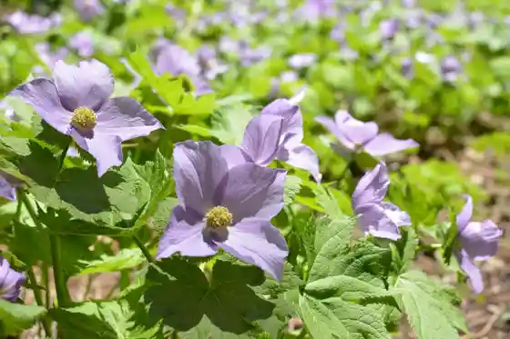
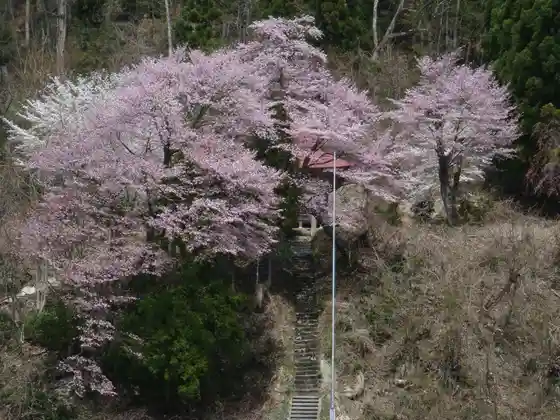
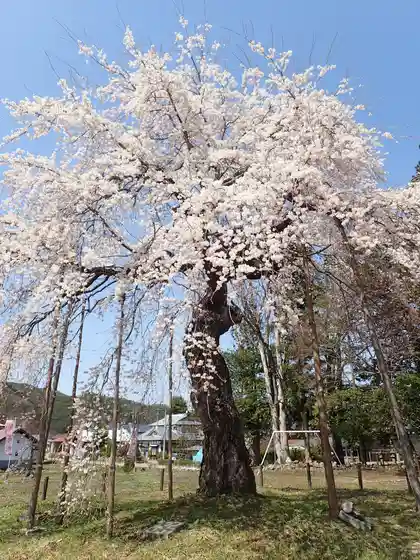
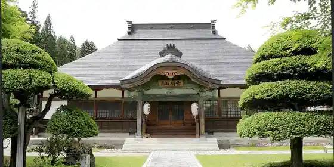

Nansen Tera no Shidare Sakura
Minamiaizu, Fukushima · 0241-62-3000 · Official / source link
Shiraneaoi Sono
Minamiaizu, Fukushima · 0241-62-3000 · Official / source link

O Kami Shrine no Tanemaki Sakura
Minamiaizu, Fukushima · 0241-64-5811 · Official / source link

Kyu Nakarai Bunko no Shidare Sakura
Minamiaizu, Fukushima · 0241-62-3000 · Official / source link

Joraku In
Minamiaizu, Fukushima · 0241-62-1465 · Official / source link

Jion Tera
Minamiaizu, Fukushima · 0241-62-2668 · Official / source link
Tajima Banko Yaki
Minamiaizu, Fukushima · 0241-66-2258 · Official / source link
Roadside Station Banya
Minamiaizu, Fukushima · 0241-78-2785 · Official / source link
Roadside Station Tajima
Minamiaizu, Fukushima · 0241-66-3333 · Official / source link
Roadside Station Kirara 289
Minamiaizu, Fukushima · 0241-71-1289 · Official / source link
Ko Town no Festival
Minamiaizu, Fukushima · 0241-64-5711 · Official / source link
Araumi Yama
Minamiaizu, Fukushima · 0241-62-3000 · Official / source link
to Kurayama
Minamiaizu, Fukushima · 0241-64-5811 · Official / source link
San Tsu Iwadake Mado Meisan
Minamiaizu, Fukushima · 0241-64-5711 · Official / source link
Taihaku Ta Yama
Minamiaizu, Fukushima · 0241-64-5711 · Official / source link
Ojiro Yama
Minamiaizu, Fukushima · 0241-64-5711 · Official / source link
Shichigagaku
Minamiaizu, Fukushima · 0241-62-3000 · Official / source link
Saito Yama
Minamiaizu, Fukushima · 0241-62-3000 · Official / source link
Aizu Tajima Asupara
Minamiaizu, Fukushima · 0241-63-3055 · Official / source link
Nango Tomato
Minamiaizu, Fukushima · 0241-72-3800 · Official / source link
Aizu Kogen Onsen Yume Baths
Minamiaizu, Fukushima · 0241-66-3131 · Official / source link
Ko Town Onsen Akaiwa So
Minamiaizu, Fukushima · 0241-76-2833 · Official / source link
Takatsue Onsen Shirakaba Baths
Minamiaizu, Fukushima · 0241-78-2241 · Official / source link
Aizu Minami Onsen Sato Baths
Minamiaizu, Fukushima · 0241-72-2132 · Official / source link
Yamaguchi Onsen Kirara 289
Minamiaizu, Fukushima · 0241-71-1289 · Official / source link
Tokusa Onsen Iwaburo
Minamiaizu, Fukushima · 0241-64-5611 · Official / source link
Yu no Hana Onsen
Minamiaizu, Fukushima · 0241-64-5611 · Official / source link
Aizu Tajima Gionmatsuri
Minamiaizu, Fukushima · 0241-62-3000 · Official / source link
Hisakawa Castle Ruins
Minamiaizu, Fukushima · 0241-64-5711 · Official / source link
Shigi Yama Castle Ruins
Minamiaizu, Fukushima · 0241-62-3000 · Official / source link
Chusho Ya no Fukuju Kusa
Minamiaizu, Fukushima · 0241-64-5811 · Official / source link
Omomo no Butai
Minamiaizu, Fukushima · 0241-64-5711 · Official / source link
Takatsuesoba Hatake
Minamiaizu, Fukushima · 0241-64-5611 · Official / source link
Kokken Shuzo
Minamiaizu, Fukushima · 0241-62-0036 · Official / source link
Kai to Otokoyama Shuzo
Minamiaizu, Fukushima · 0241-62-0023 · Official / source link
Aizu Shuzo
Minamiaizu, Fukushima · 0241-62-0012 · Official / source link
Shirakaba Park
Minamiaizu, Fukushima · 0241-78-2028 · Official / source link
Maesawa Magariya Shuraku
Minamiaizu, Fukushima · 0241-72-8977 · Official / source link
Takashimizu Nature Park Himesayuri Gunsei Chi
Minamiaizu, Fukushima · 0241-64-5811 · Official / source link
Nagata no Entei Sakura
Minamiaizu, Fukushima · 0241-62-3000 · Official / source link
Hanaizumi Shuzo
Minamiaizu, Fukushima · 0241-73-2029 · Official / source link
Byobu Iwa
Minamiaizu, Fukushima · 0241-64-5711 · Official / source link
Aizu Kogen Nango Ski Area
Minamiaizu, Fukushima · 0241-73-2111 · Official / source link
Kita Nikko Takahata Ski Area
Minamiaizu, Fukushima · 0241-76-2231 · Official / source link
Aizu Kogen Takatsue Ski Area
Minamiaizu, Fukushima · 0241-78-2220 · Official / source link
Aizu Kogen Daikura Ski Area
Minamiaizu, Fukushima · 0241-64-2121 · Official / source link
Oze National Park Tashiro Yama
Minamiaizu, Fukushima · 0241-64-5611 · Official / source link
Oarashi Yama Yu no Kurayama
Minamiaizu, Fukushima · 0241-64-5611 · Official / source link
Cho Oroshi Yama
Minamiaizu, Fukushima · 0241-64-5611 · Official / source link
Sanno Toge
Minamiaizu, Fukushima · 0241-66-3333 · Official / source link
Ko Town no Dai Icho
Minamiaizu, Fukushima · 0241-64-5711 · Official / source link
Komatome Marsh (Minamiaizu)
Minamiaizu, Fukushima · 0241-62-3000 · Official / source link